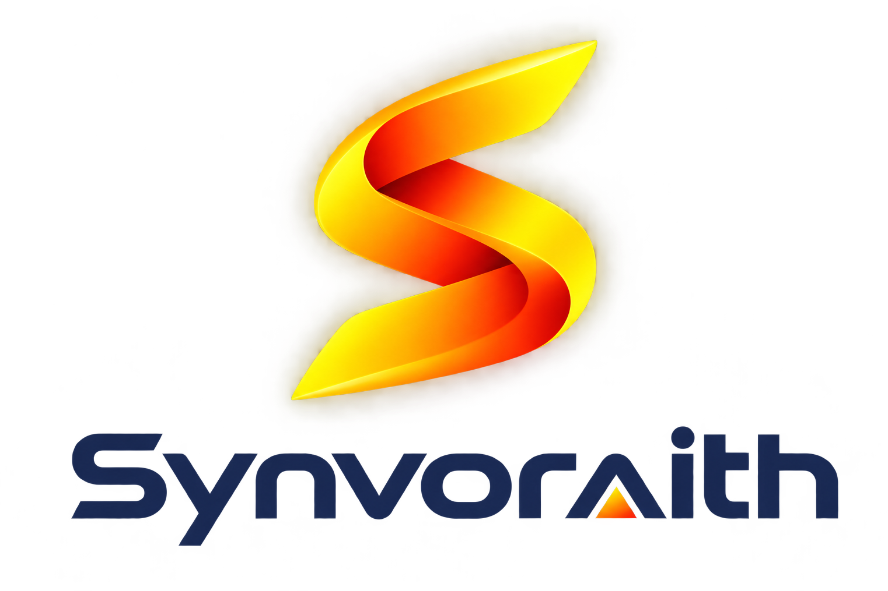

⌘
Explore with purpose
Identify meaningful problems, review the data and define what success should look like before choosing a model or tool.
Synvoraith AI Labs explores practical artificial intelligence—from machine learning and computer vision to conversational AI and smart automation—then turns experiments into useful real-world tools.

We experiment with emerging technologies and develop practical prototypes that make complex tasks simpler. Our focus is on clear problem-solving, measurable learning, and thoughtful implementation—not AI for its own sake.
Identify meaningful problems, review the data and define what success should look like before choosing a model or tool.
Create prototypes, test ideas quickly, and combine the right AI techniques with dependable software engineering.
Evaluate quality, reliability, usability and safety—then iterate based on evidence and feedback.
Areas of exploration for research, prototypes and future solutions.
Data-driven models, prediction, classification, evaluation and model improvement.
Image analysis, object detection, OCR and vision-based prototypes using modern tools.
Chatbots, intelligent assistants, FAQ experiences and natural-language interfaces.
Workflow design, task automation, integrations and reducing repetitive manual work.
Data preparation, experiment tracking, testing and performance measurement.
Privacy-aware design, human oversight, security considerations and transparent limitations.
A repeatable workflow helps us build carefully, test honestly and improve with every iteration.
Understand the problem, users, constraints and success criteria.
Collect, review, clean and prepare relevant data responsibly.
Select methods, develop prototypes and train or configure models.
Measure performance, check edge cases and improve reliability.
Integrate the solution, monitor results and iterate from feedback.
Example project areas that demonstrate how AI can be applied. Specific projects can be added as they are completed.
Design an automation by dragging nodes onto a canvas and connecting them, then run it to watch the flow execute step by step. Built so clients can sketch their own process with us, and export it as a blueprint.
AutomationLive demoA computer-vision learning project exploring face detection and recognition workflows, with careful attention to consent, privacy and testing.
Computer VisionA concept for handling common questions, routing enquiries and supporting customer conversations with appropriate human handoff.
AutomationPrototype conversational experiences that help people find information and complete routine tasks more efficiently.
Conversational AIA practical view of experiment results, model metrics, test cases and improvements across iterations.
ML & AnalyticsThis is a working prototype. Drag nodes, connect them, edit their settings and press Run workflow to see how an automation would behave. Nothing is actually sent.
Connect with Synvoraith AI Labs to discuss ideas, prototypes, research collaborations or automation opportunities.